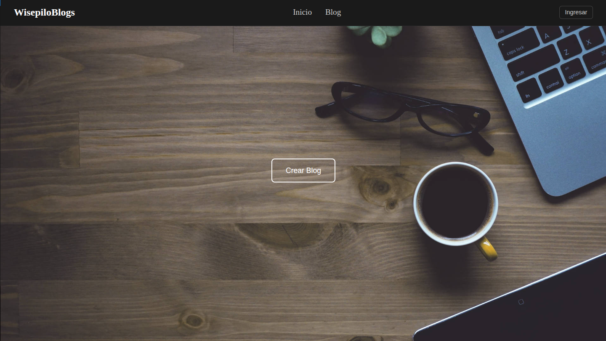

Mis Proyectos Destacados

WisepiloGames
Web de juegos que incluye la implementación de Tic-Tac-Toe (con lógica de IA/Bot), un desafío de identificación geográfica (GeoGrid) y una recreación funcional del juego de Pasapalabra.
Ver Proyecto

WisepiloBlogs
Una web de gestión de contenido (CMS/Blog) robusta y segura. Este proyecto fue creado para demostrar la capacidad de la creación de una arquitectura full-stack moderna, enfocada en la mitigación de riesgos de seguridad comunes y en la separación lógica de componentes.
Ver Proyecto